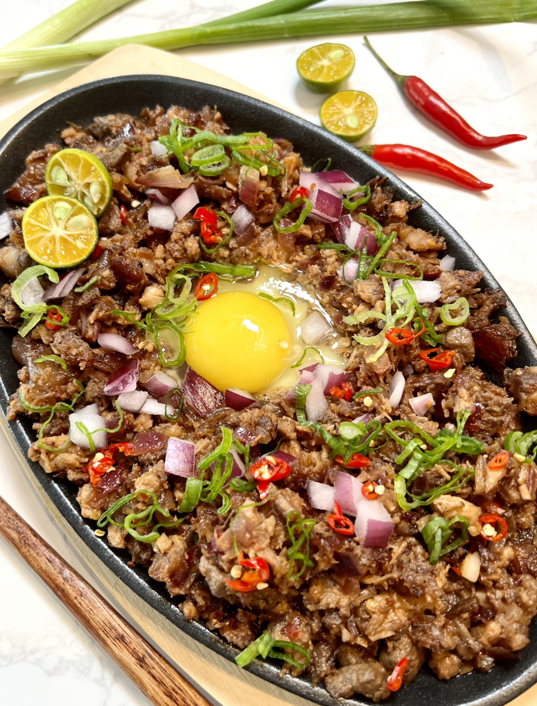

Pork sisig is a popular Filipino dish. It can be considered as a main dish or an appetizer. The composition of this
dish is mainly of pig’s parts such as minced pork meat, ears, and face.
Chicken liver, onions, and chili peppers are also added. The joy of eating food comes from many things. Sometimes…
Ingredients:
- 500 grams pig's mask or pork belly (trim excess fat if preferred), boiled in water with black peppercorns, bay leaf, onion and garlic until tender, drained
- as needed fish sauce and black pepper
- as needed canola oil
- 1 pc red onion, chopped
- 1 (1-inch) pc ginger, chopped
- 1/4 cup chicken liver, chopped (optional)
- 1 pc green chilli, sliced
- as needed bird's eye chilli, sliced
- as needed Knorr Liquid Seasoning
- 5 tbsps Lady's Choice real mayonnaise
- 3 pcs calamansi
Steps:
- Season boiled meats then grill or cook in a 375F oven until crispy. Chop into small cubes.
- In pan, sauté onion and ginger. Add chicken liver and sauté until cooked. Add the chopped meats, and chilies. Season with Knorr Liquid Seasoning according to taste.
- Off the heat, add Lady’s Choice Real Mayonnaise and mix well. Serve hot with calamansi.